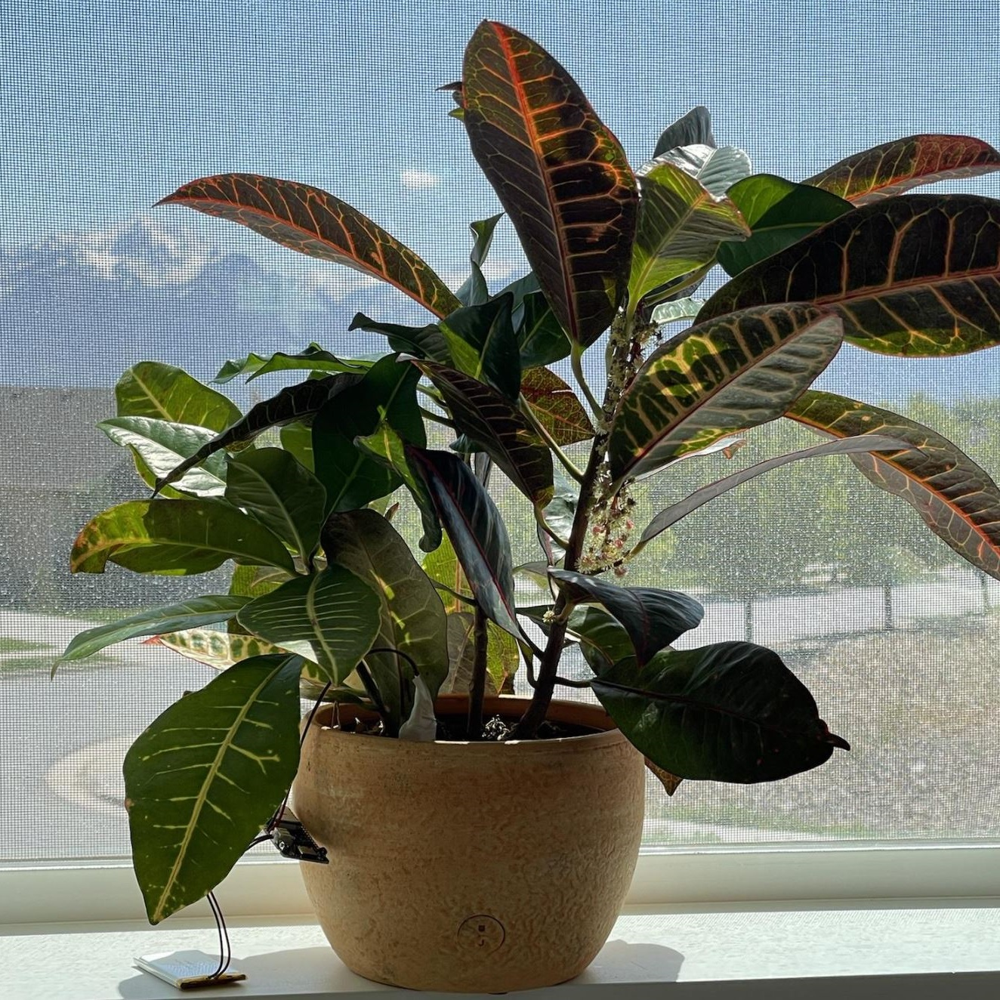
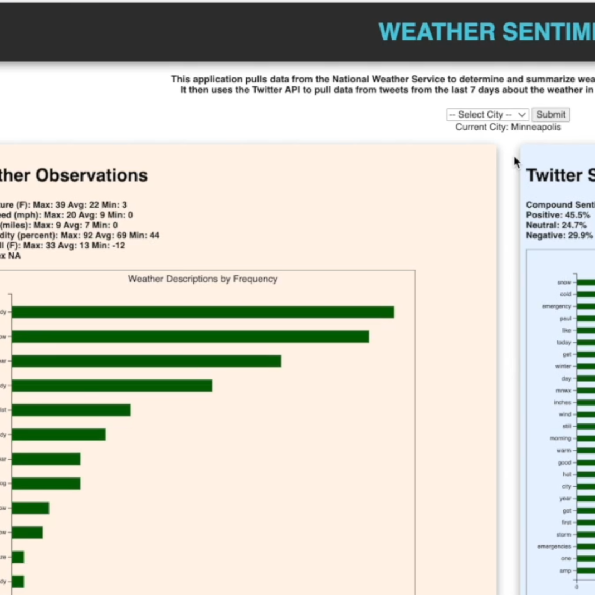
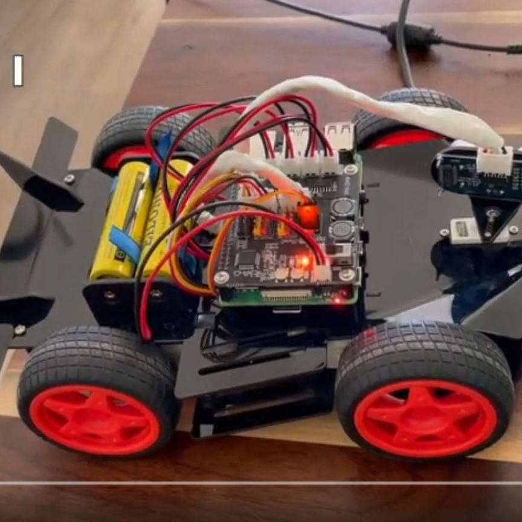

|
Joshua (Stapley) Montoya I am a Master of Computer Science student, emphasizing Data Science and Machine Learning, in my final semester at the University of Illinois Urbana-Champaign. I love working with data. My primary interests are in the geospatial and biotech fields. I am also a reliability engineer at L3Harris Technologies, Inc., where I have employed approaches in predicting the probability of equipment failure, as well as the components of failure, among other related items. |

|
Selected Projects |
|
NYC Building Permits
Joshua Montoya 2025 permits map / project code New York City permits for new buildings mapped, updated daily. Airflow used for workflow orchestration, Terraform for setting up GCS infrastructure, GCS for data lake, BigQuery for warehousing, Looker for dashboard, Docker for containerization. Data from NYC Open Data accessedd using Socrata Open Data API. |
|
|  |
Plant Monitoring IoT Device
Joshua Montoya 2022 implementation details / project code / short demo Battery-powered plant monitoring device for household plants that sends periodic data via Bluetooth for display in an iOS app, coded using Python, Swift, and the Arduino IDE. |

|
Forest Species Segmentation in Aerial Imagery of Wasatch Mountains Using 3D Convolutional Neural Network
Joshua Montoya 2023 implementation details / zoomable segmented map / project code Aerial imagery of the Wasatch Mountain Range, provided by the National Agriculture Imagery Program (NAIP), was self-labeled for partial ground truth to train a model to segment all 144 images in the dataset by species ground cover. The approach involved a 3D CNN model trained using Hyperspectral Imaging (HSI) cubes. Pixel classification accuracies on 3 unseen test images were 84, 74, and 73 percent. Project is ongoing. |
|  |
Weather Sentiment Analyzer
Joshua Montoya 2022 project description and code / short demo Sentiment analysis was performed on recent tweets in selected US cities to determine how the weather in each city may potentially influence the overall sentiment of the Tweets of users in those cities. The Twitter API was used to pull tweet content, including location data, as well as the National Weather Service API to determine recent weather observations. |
|  |
Self-Driving Toy Car with Navigation, Obstacle Detection, and Object Recognition
Joshua Montoya 2022 implementation details / project code / short demo A motorized toy car mounted with a Raspberry Pi, ultrasonic sensor, and camera was programmed to navigate a route, while avoiding obstacles and leveraging Tensorflow libararies to recognize important objects and signs, and obey a limited set of traffic laws. |
|
|